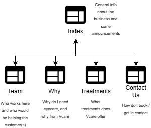

Name: Jack Kelly
The goal of Vcare's new website, is to achieve more eye tests and bookings for Vcare Opticals, specifically by drawing in potential and returning customers through the sites integration of information about the practice and it's services, pushed by a modern appearance. This would be aided through the announcements mentioned in the intro email which specifies discounts under certain conditions, something that is sure to bring people in, as well as information that encourages eye check-ups take place for customers' health. These types of logos will persuade people to come in, or book appointment, hopefully giving a measurable increase in customers for Vcare.
We would know this goal has been achieved by more and more people booking through email. This would be seen particularly with the booking through email, as the website in particular would mention that this would come with a discount, as mentioned in the task sheet. Aside from this, bringing in more customers, and receiving calls or queries as opposed to just measuring hits tothe site, or bookings overall, would give a measurable idea of success for Vcare. Hence, the contact details for Vcare should be shown almost everywhere - perhaps even placed in the Nav bar, the same way some other local companies do. Ontop of this, there should be an extra link or two to the contact us page, and the home page should reference the 'deals' on offer to push emails or calls to the company.
The target audience here would be people who require eye care of all kinds, particularly locals over 18. Though this seems broad as many people are over 18, the portion of those who need eye care would be considerably lower. People over 60 or so are probably unlikely to use the internet, but the site should still be simple enough for a more basic, less tech literate user, to use. Alligning with this, the target audience clearly requires eye care, so the site should use easy to read text with basic fonts, styles, and perhaps larger print so users can make out what appears on the screen. This works for the audience as accessibility like this is important for people with impairments, especially when your business is focused on fixing those impairments, or aiding with them. Even more so, a basic colour scheme would suffice with say two or three colours that present a clean, simple presence - the audience is not there for entertainment or fun, but rather a straightforward service.
